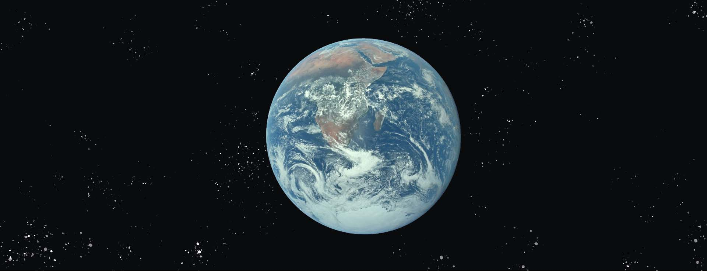
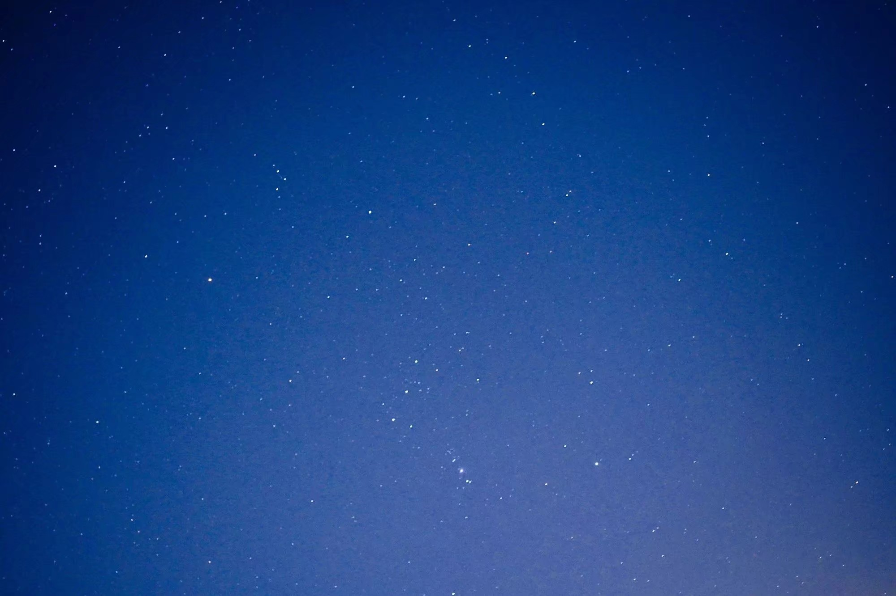

首页
太阳系
月球
太阳
金星
水星
火星
木星
土星
天王星
海王星
小行星世界
太阳系边缘
太阳系纵览
返回

地球｜EARTH
看这眼熟的蓝色星球
它就是我们打开微信时看到的那张初始图片的背景图。这是一张
相当有名的太空摄影照片，名叫“蓝色弹珠”，由阿波罗17号
的宇航员于1972年12月7日在太空中拍摄。
图中的那个蓝白
相间的大圆球，就是我们的家园——地球。
我们的地球
深入探索
地球的 3D 模型，我们的家园星球。
用鼠标拖动试试
Source: NASA Visualization Technology Applications and Development (VTAD)

质量：5.972✕1024 kg
体积：1.083×1012km³
与太阳的平均距离：1.496×108km
直径：12756 km
年长：365日6时9分10秒